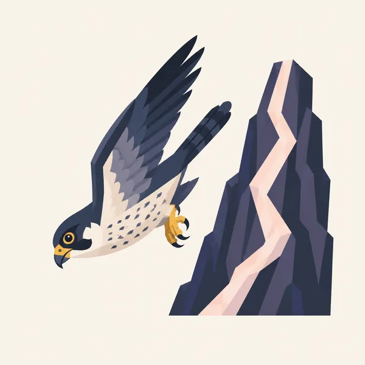
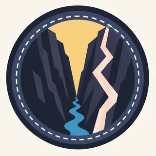

01
The Gunnison Uplift
About 60 million years ago a small area rose and brought 1.8-billion-year-old metamorphic rock to high elevations. About 30 million years ago volcanoes on either side buried that highland in volcanic rock.
TrailMark Archive Edition
Colorado | Gunnison River
A gorge 2,722 feet deep and, at the river, as narrow as 40 feet, cut into rock nearly two billion years old.
Archive No. TM-BLCA-024
National Park since 1999
Collection Gunnison
Park Overview
On October 21, 1999, President Bill Clinton signed the act that established Black Canyon of the Gunnison National Park. It also enlarged the earlier Black Canyon National Monument.
The park's own 20th-anniversary release says the monument dates from 1933, and that communities on Colorado's Western Slope had argued for a park across several decades before Senator Ben Nighthorse Campbell and Congressman Scott McGinnis carried the bill. In 2017, 2,494 acres of private land inside the boundary were added with Land and Water Conservation Fund money.
The name is already long. The title of this page stays the full name, without a hook, because a hook would push it past 60 characters. The canyon itself is the hook: deep, steep, and narrow at once.
Emotional Thesis
The geology page refuses the easy superlative. Black Canyon is not the steepest, deepest, or narrowest canyon in the West. It is an impressive example of all three combined.
TrailMark paints the pale stripes on the dark wall because that combination is the picture. A gorge that is only deep, or only narrow, would not look like this one.
Landscape Highlights
01
About 60 million years ago a small area rose and brought 1.8-billion-year-old metamorphic rock to high elevations. About 30 million years ago volcanoes on either side buried that highland in volcanic rock.
02
As early as two million years ago the Gunnison River flowed in force, stripped the volcanic cover, and cut the metamorphic rock. The greatest depth is 2,722 feet, just north of Warner Point. The narrowest width at the river is 40 feet.
03
The canyon runs 48 miles. Fourteen of those miles are inside the national park. The average descent over the whole canyon is 43 feet per mile. The park is the sharpest piece of a longer cut, not the entire river.
Wildlife
Animals live from canyon rim to river and need specific ways of living to manage it. That is the animals page in one sentence.

01
The habitats NPS names are the rim woodlands, the inner canyon, and the river edge. A species list beyond that was not copied because those pages were not the ones opened for numbers.
02
The falcon is the archive illustration of a bird using the wall. It is not a census.
03
Introduced species, fire, grazing, and changes in water or air are listed by NPS as forces that last. The river is not a backdrop. It is habitat.
Geology
Black Canyon exposes nearly two-billion-year-old Precambrian basement, one of the best examples in the world, and the Gunnison River has been cutting in earnest for about two million years.
01
Igneous, metamorphic, and sedimentary rocks all appear. The canyon also holds Jurassic and Cretaceous fossil plants, invertebrates, fragmentary vertebrates, and trace fossils.
02
Depth 2,722 feet, narrows of 40 feet at the river, length 48 miles with 14 inside the park. Those are the geology-page figures.
03
The walls resisted erosion and weathered into distinct stretches. That is why one overlook does not stand in for the next.
The South Rim and North Rim are different drives, and winter closes options. Read the NPS alert before you commit to a rim.
The 1999 park was celebrated with spring parades in nearby towns. On the rim, oak and the river are both waking. The inner canyon is a different season from the overlook.
The gorge is dark because it is narrow, not because the rim is cool. Water and the route down, if you have one, are NPS questions.
The anniversary release used a fall photograph. Side light is when the pale bands on the wall show up in a picture.
Photography
A black wall filling the frame looks like texture. The river at the bottom, thin and bright, is what makes 2,722 feet believable.
01
The header does this. Copy that relationship, not only the color of the stone.
02
They are the visible metamorphic story. A silhouette of the rim throws them away.
03
The edge is the photograph and the hazard. NPS conditions, not the painting, say whether a rail is there.
Field Notes
The canyon is famous for being narrow and deep at the same time, which is a harder fact than either word alone.
TrailMark Field Notes

Badge Story
The badge should feel narrow. If it reads as a wide red canyon, it has become the wrong park.
Near-black rock and a light band, like the header.
A thin river, not a lake.
A falcon can sit on the extra plate. The badge is the gorge.
Archive No.024
LocationGunnison
ReleaseGorge Mark
Stewardship / Safety
Routes into the gorge are a Park Service decision for that day. This page does not describe a descent.
The narrows at the river are 40 feet wide in the geology account. That is a measurement, not an invitation.
Stay behind rails on the rim. The depth figure is 2,722 feet for a reason.
Water quality, grazing, and introduced plants are named by NPS as lasting pressures. Do not add a shortcut through the oak.
Fees, permits, and which rim road is open belong on nps.gov.
Current conditions, fees, and alerts are on the National Park Service site.
Continue the Archive
Grand Canyon is the long Colorado. Canyonlands is rivers and mesas. This one is the narrow cut.